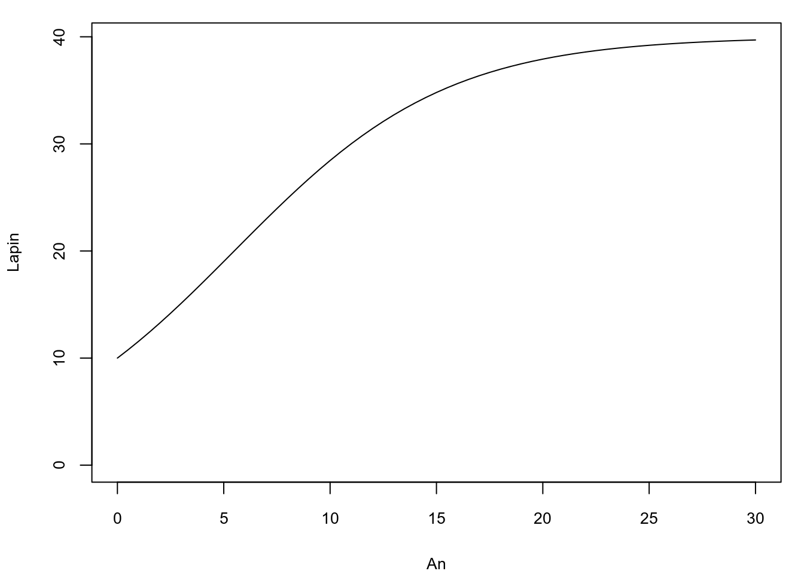
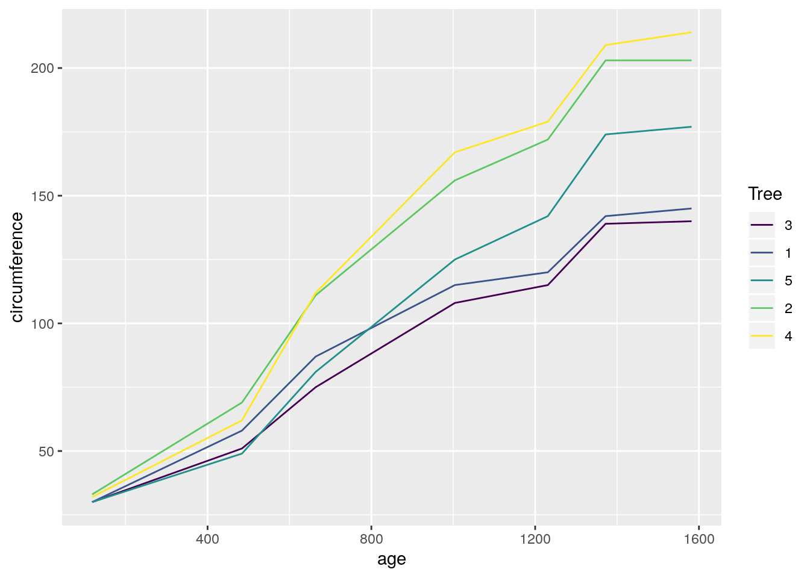

10 Les séries temporelles
️ Objectifs spécifiques:
À la fin de ce chapitre, vous
- saurez comment importer et manipuler des données temporelles (utiliser le format de date, filtrer, effectuer des sommaires, aggréger des données, etc.)
- effectuer une régression sur une série temporelle
Les séries temporelles (ou chronologiques) sont des données associées à des indices temporels de tout ordre de grandeur: seconde, minute, heure, jour, mois, année, etc. En analyse de série temporelle, le temps est une variable explicatrice (ou dépendante) incontournable. L’émergence de cycles est une particularité des séries temporelles. Ceux-ci peuvent être analysés en vue d’en déterminer la tendance. Les séries temporelles peuvent également être modélisés en vue d’effectuer des prédictions. Nous allons couvrir les concepts de base en analyse et modélisation de séries temporelles. Mais avant cela, voyons comment les données temporelles sont manipulées en R.
Cette section est largement basée sur le livre Forecasting: Principles and Practice, de Rob J. Hyndman et George Athanasopoulos, qui peut être entièrement consulté gratuitement en ligne.
.](images/09_fpp2_cover.jpg)
10.1 Opérations sur les données temporelles
Le débit de la rivière Chaudière, dont l’exutoire se situe près de Québec, sur la rive Sud du fleuve Saint-Laurent, est mesuré depuis 1915.
## ── Attaching packages ─────────────────────────────────────────────────────────────────────────────────────────────────────────────────────────────────────────────────── tidyverse 1.2.1 ──## ✔ ggplot2 3.1.0 ✔ purrr 0.3.1
## ✔ tibble 2.0.1 ✔ dplyr 0.8.0.1
## ✔ tidyr 0.8.3 ✔ stringr 1.4.0
## ✔ readr 1.3.1 ✔ forcats 0.4.0## ── Conflicts ────────────────────────────────────────────────────────────────────────────────────────────────────────────────────────────────────────────────────── tidyverse_conflicts() ──
## ✖ dplyr::filter() masks stats::filter()
## ✖ dplyr::lag() masks stats::lag()## Parsed with column specification:
## cols(
## Station = col_double(),
## Date = col_date(format = ""),
## Débit = col_double(),
## Remarque = col_character()
## )La fonction read_csv() détecte automatiquement que la colonne Date est une date.
glimpse(hydro)## Observations: 34,700
## Variables: 4
## $ Station <dbl> 23402, 23402, 23402, 23402, 23402, 23402, 23402, 23402,…
## $ Date <date> 1915-02-27, 1915-02-28, 1915-03-01, 1915-03-02, 1915-0…
## $ Débit <dbl> 538, 377, 269, 345, 269, 334, 269, 269, 269, 269, 269, …
## $ Remarque <chr> "MC", "MC", "MC", "MC", "MC", "MC", "MC", "MC", "MC", "…Le débit de la rivière Chaudière peut être exploré graphiquement.
hydro %>%
ggplot(aes(x = Date, y = `Débit`)) +
geom_line()
On observe des données sont manquantes de la fin des années 1920 à la findes années 1930. Autrement, il est difficile de visualiser la structure du déit en fonction du temps, notamment si le débit suit des cycles réguliers. On pourra isoler les données depuis 2014.
hydro %>%
filter(Date >= as.Date("2014-01-01")) %>%
ggplot(aes(x = Date, y = `Débit`)) +
geom_line()
R comprend la fonction as.Date(), où l’argument format décrit la manière avec laquelle la date est exprimée.
as.Date(x = "1999/03/29", format = "%Y/%m/%d")## [1] "1999-03-29"L’argument x peut aussi bien être une chaîne de caractères qu’un vecteur où l’on retrouve plusieurs chaînes de caractères exprimant un format de date commun. La fonction as.Date() permet ainsi de transformer des caractères en date si read_csv() ne le détecte pas automatiquement. Ce format peut prendre la forme désirée, dont les paramètres sont listés sur la page d’aide de la fonction strptime(). Toutefois, le plus petit incrément de temps accepté par as.Date() est le jour: as.Date() exclut les heures, minutes et secondes. Le module lubridate, issu du tidyverse, permet quant à lui de manipuler avec plus de grâce les formats de date standards, incluant les dates et les heures: lubridate sera préféré dans ce chapitre.
##
## Attaching package: 'lubridate'## The following object is masked from 'package:base':
##
## date## [1] "2011-02-19 09:14:00 UTC"Plusieurs autres formats standards sont présentés sur un aide-ménoire de lubridate. Si vos données comprennent des formats de date non standard, vous pourrez utiliser la fonction as.POSIXlt(), mais il pourrait être préférable de standardiser les dates a priori.
.](images/09_lubridate-cheatsheet-thumbs.png)
Figure 10.2: Aide-mémoire du module lubridate.
Le module lubridate rend possible l’extraction de la date (date()), l’année (year()), le mois (month()), le jour de la semaine (wday()), le jour julien (yday()), etc. pour plus d’options, voir [l’aide-mémoire de lubridate])(https://rawgit.com/rstudio/cheatsheets/master/lubridate.pdf).
date_1 <- ymd_hms("2011-02-19 09:14:00")
date_1 %>% date()## [1] "2011-02-19"date_1 %>% month()## [1] 2date_1 %>% yday()## [1] 50date_1 %>% seconds()## [1] "1298106840S"Ces extractions peuvent être utilisées dans des suites d’opération (pipelines). Par exemple, si nous désirons obtenir le débit mensuel moyen de la rivière Chaudière depuis 1990, nous pouvons créer une nouvelle colonne Year et une autre Month avec la fonction mutate(), effectuer un filtre sur l’année, regrouper par mois pour obtenir le sommaire en terme de moyenne, puis lancer le graphique.
hydro_month <- hydro %>%
mutate(Year = Date %>% year(),
Month = Date %>% month()) %>%
filter(Year >= 1990) %>%
group_by(Month) %>%
summarise(MeanFlow = mean(`Débit`, na.rm = TRUE))
hydro_month %>%
ggplot(aes(x=Month, y=MeanFlow)) +
geom_line() +
scale_x_continuous(breaks = 1:12) +
expand_limits(y = 0)
On pourra aussi aggréger par moyenne mensuelle en gardant l’année respective en créant une nouvelle colonne de date YearMonth qui permettra le regroupement avec group_by(), puis créer plusieurs facettes.
hydro %>%
mutate(Year = Date %>% year(),
Month = Date %>% month(),
YearMonth = ymd(paste0(Year, "-", Month, "-01"))) %>%
filter(Year >= 2010 & Year < 2018) %>%
group_by(Year, YearMonth) %>%
summarise(`Débit` = mean(`Débit`, na.rm = TRUE)) %>%
ggplot(aes(x=YearMonth, y=`Débit`)) +
facet_wrap(~Year, scales = "free_x", ncol = 4) +
geom_line() +
expand_limits(y = 0)
Il est possible d’effectuer des opérations mathématiques sur des données temporelles. Par exemple, ajouter 10 jours à chaque date.
hydro %>%
head(5) %>%
mutate(DateOffset = Date + days(10))## # A tibble: 5 x 5
## Station Date Débit Remarque DateOffset
## <dbl> <date> <dbl> <chr> <date>
## 1 23402 1915-02-27 538 MC 1915-03-09
## 2 23402 1915-02-28 377 MC 1915-03-10
## 3 23402 1915-03-01 269 MC 1915-03-11
## 4 23402 1915-03-02 345 MC 1915-03-12
## 5 23402 1915-03-03 269 MC 1915-03-13Pour effectuer des opérations sur des incréments inférieurs aux jours, il faut s’assurer que le type des données temporelles soit bien POSIXct, et non pas Date.
hydro %>% pull(Date) %>% class()## [1] "Date"hydro <- hydro %>%
mutate(Date = as_datetime(Date))
hydro %>% pull(Date) %>% class()## [1] "POSIXct" "POSIXt"hydro %>%
head(5) %>%
mutate(DateOffset = Date + seconds(10))## # A tibble: 5 x 5
## Station Date Débit Remarque DateOffset
## <dbl> <dttm> <dbl> <chr> <dttm>
## 1 23402 1915-02-27 00:00:00 538 MC 1915-02-27 00:00:10
## 2 23402 1915-02-28 00:00:00 377 MC 1915-02-28 00:00:10
## 3 23402 1915-03-01 00:00:00 269 MC 1915-03-01 00:00:10
## 4 23402 1915-03-02 00:00:00 345 MC 1915-03-02 00:00:10
## 5 23402 1915-03-03 00:00:00 269 MC 1915-03-03 00:00:1010.2 Analyse de séries temporelles
Tout comme c’est le cas de nombreux sujet couverts lors de ce cours, l’analyse et modélisation de séries temporelles est un domaine d’étude en soi. Nous allons nous restreindre ici aux séries temporelles consignées à fréquence régulière. Les exemples d’analyses et modélisation de séries temporelles sont typiquement des données économiques, bien que les principes qui les guident sont les mêmes qu’en d’autres domaines. Cette section est vouée à l’analyse, alore que la prochaine est vouée à la modélisation.
Par exemple, voici une série temporelle économique typique, qui exprime les dépenses mensuelles en restauration en Australie.
library("fpp2")## Loading required package: forecast## Loading required package: fma## Loading required package: expsmoothdata("auscafe")
autoplot(auscafe)
On y détecte une tendance générale, probablement propulsée par la croissance de la démographie et des revenus, ainsi que des tendances cycliques. On vera plus loin comment prédire des occurences futures, ainsi que l’incertitude de ces prédictions, à partir des données consignées.
Jusqu’à présent, nous avons travaillé avec des tableaux de données incluant une colonne en format date. Nous allons maintenant travailler avec des séries temporelles telles que représentées en R.
10.2.1 Créer et visualiser des séries temporelles
L’information consignée dans une série temporelle inclut nécessairement un incide temporel associé à au moins une variable. En R, cette information est consignée dans un objet de type ts, pour time series. Prenons une mesure quelconque prise à chaque trimestre de l’année 2018.
set.seed(96683)
date <- ymd(c("2018-01-01", "2018-04-01", "2018-07-01", "2018-10-01"))
mesure <- runif(length(date), 1, 10)
mesure_ts <- ts(mesure, start = date[1], frequency = 4)
mesure_ts## Qtr1 Qtr2 Qtr3 Qtr4
## 17532 7.175836 3.646285 6.631606 8.648371L’argument start est la date de la première observation et frequency est le nombre d’observation par untié temporelle, ici l’année.
J’ai auparavant recueilli des données météo avec weathercan (dispobibles seulement depuis 1998) et fusionné avec le tableau hydro. Pour accélérer la procédure, j’ai enregistré les données dans un fichier RData. De facto, ne gardons que les données disponibles entre 1998 et 2008, ainsi que les colonnes désignant la date, le débit, les précipitations totales et la température.
## Observations: 3,653
## Variables: 4
## $ Date <date> 1998-01-01, 1998-01-02, 1998-01-03, 1998-01-04, 19…
## $ Débit <dbl> 15.70, 16.00, 17.40, 19.30, 23.20, 29.00, 58.85, 65…
## $ total_precip <dbl> 1.6, 2.8, 2.2, 0.0, 5.8, 11.8, 2.4, 19.2, 11.6, 2.6…
## $ mean_temp <dbl> -21.1, -8.9, 1.9, -3.2, -8.7, -8.0, -7.4, -6.3, -5.…Pour créer une série temporelle de type ts, j’enlève la date, je démarre au premier événement de 1998, et chaque incrément a une fréquence de 1/365.25 unités depuis 1998 (il y a en moyenne 365.25 jours par an).
hydrometeo_ts <- ts(hydrometeo %>% select(-Date),
start = c(hydrometeo$Date[1] %>% year(), 1),
frequency = 365.25)Le module ggplot2 comprend la fonction autoplot(), pratique pour visualiser les séries temporelles.
autoplot(hydrometeo_ts, facets = TRUE) +
scale_x_continuous(breaks = 1998:2008)
Il est possible de filter des séries temporelles en mode tidyverse. Toutefois, il est plus simple d’utiliser la fonction de base windows(). Disons, les 10 premiers jours de l’an 2000.
window(hydrometeo_ts, start = 2000, end = 2000 + 10/365.25)## Time Series:
## Start = 2000.00136892539
## End = 2000.02600958248
## Frequency = 365.25
## Débit total_precip mean_temp
## 2000.001 42.40 9.4 -5.6
## 2000.004 40.70 0.0 -5.5
## 2000.007 43.60 23.5 -0.9
## 2000.010 49.04 0.0 -8.8
## 2000.012 58.90 0.0 -12.9
## 2000.015 49.10 1.2 -4.6
## 2000.018 44.40 3.8 -10.5
## 2000.021 40.60 6.8 -4.9
## 2000.023 38.10 7.0 -2.3
## 2000.026 36.50 12.9 -0.3Voyons l’évolution des débits mensuelles.
hydrometeo_monthly <- hydrometeo %>%
mutate(Year = Date %>% year(),
Month = Date %>% month(),
YearMonth = ymd(paste0(Year, "-", Month, "-01"))) %>%
group_by(Year, YearMonth) %>%
summarise(`Débit` = mean(`Débit`, na.rm = TRUE),
total_precip = mean(total_precip, na.rm = TRUE),
mean_temp = mean(mean_temp, na.rm = TRUE))
hydrometeo_monthly_ts <- ts(hydrometeo_monthly %>% ungroup() %>% select(`Débit`, total_precip, mean_temp), start = c(1998, 1), frequency = 12)Contraignons la période grâce à window(), puis visualisons les tendances cycliques avec forecast::ggseasonplot() et forecast::ggsubseriesplot(). Notez que j’utilise la fonction cowplot::plot_grid() pour arranger différents graphiques ggplot2 en une grille.
library("forecast")
library("cowplot")##
## Attaching package: 'cowplot'## The following object is masked from 'package:ggplot2':
##
## ggsavetheme_set(theme_grey()) # cowplot change le theme
ggA <- ggseasonplot(window(hydrometeo_monthly_ts[, 1], 1998, 2004-1/365.25)) + ggtitle("")
ggB <- ggseasonplot(window(hydrometeo_monthly_ts[, 1], 1998, 2004-1/365.25), polar = TRUE) + ggtitle("")
ggC <- ggsubseriesplot(window(hydrometeo_monthly_ts[, 1], 1998, 2004-1/365.25), polar = TRUE) + ggtitle("") + labs(y="Flow")
plot_grid(ggA, ggB, ggC, ncol = 3, labels = c("A", "B", "C"))
10.2.2 Structures dans les séries temporelles
Les séries temporelles sont susceptibles d’être caractrisées par des structures communément observées.
- La tendance est une structure décrivant la hausse ou la baisse à long terme d’une variable numérique.
- La fluctuation saisonnière est une structure périodique, qui oscsille autour de la tendance générale de manière régulière selon le calendrier.
- La fluctiation cyclique est aussi une structure périodique, mais irrégulière (par exemple, les oscillations peuvent durer parfois 2 ans, parfois 3). Les fluctuations cycliques sont souvent de plus longue fréquence que les fluctuations saisonnières, et leur irrégularité rend les prédictions plus difficiles.
Note. Une tendance détectée sur une période de temps trop courte peut s’avérer être une fluctuation.
La figure 10.3 montre différentes strucures. La figure 10.3A montre une tendance croissante des dépenses mensuelles en restauration en Australie, ainsi que des fluctuations saisonnières. La figure 10.3B montre des fluctuations saisonnières des températures quotidiennes moyennes à l’Université Laval, sans présenter de tendance claire. La figure 10.3C montre des fluctuations cycliques du nombre de lynx trappés par année au Canada de 1821 à 1934, sans non plus présenter de tendance claire. Les cycles sont conséquentes des mécanismes de dynamique des populations (plus de proie entraîne plus de prédateur, plus de prédateur entraîne moins de proie, moins de proie entraîne moins de prédateur, moins de prédateur entraîne plus de proie, etc.), que nous couvrirons au chapitre 14.
data("lynx")
plot_grid(autoplot(auscafe),
autoplot(hydrometeo_ts[, 3]) + labs(y="Mean temperature"),
autoplot(lynx),
ncol = 3,
labels = c("A", "B", "C"))Figure 10.3: Identification des tendances et fluctuations dans des séries temporelles
Il est possible que l’on retrouve une hiérarchie dans les fluctuations, c’est-à-dire que de grandes fluctuations (saisonnières ou cycliques) peuvent contenir des fluctuations sur des incréments de temps plus petits.
10.2.3 L’autocorrélation
Lorsque les données présentes des fluctuations (saisonnières ou cycliques), le graphique d’autocorrélation montrera un sommet aux étapes des cycles ou des saisons. Le graphique d’autocorrélation de données aléatoires (aussi appelées bruit blanc) montera des sommets sans signification.
Un graphique de retardement (lag plot) met successivement en relation \(y_t\) avec \(y_{t-p}\). Un graphique d’autocorrélation est la corrélation entre \(y_t\), \(y_{t-1}\), \(y_{t-2}\), etc. Une graphique de retardement donne un aperçu de la dépendance d’une variable selon ses valeurs passées. Les graphiques de retardement de données ayant une forte tendance présenteront des points près de la diagonale, tandis que ceux montrant des données fluctuantes de type sinusoïdal présenteront des points disposés de manière circulaire. Des données aléatoires, quant à elles, ne présenteront pas de structure de retardement facilement identifiable.
set.seed(64301)
bruit_blanc <- ts(runif(114, 0, 6000), start = c(1821, 1), frequency = 1)
plot_grid(autoplot(lynx) + ggtitle("Lynx: Série temporelle"),
ggAcf(lynx) + ggtitle("Lynx: Autocorrélation"),
gglagplot(lynx) + ggtitle("Lynx: Lag plot"),
autoplot(bruit_blanc) + ggtitle("Bruit blanc: Série temporelle"),
ggAcf(bruit_blanc) + ggtitle("Bruit blanc: Autocorrélation"),
gglagplot(bruit_blanc) + ggtitle("Bruit blanc: Lag plot"),
ncol = 3)
Exercice. Créez, puis interprétez des graphiques autoplot(), ggAcf() et gglagplot() pour les données auscafe.
Exercice. Trouvez le graphique d’autocorrélation et le graphique de retardement correspondant à chaque série temporelle.

Figure 10.4: Exercice: Trouvez le graphique d’autocorrélation et le graphique de retardement correspondant à chaque série temporelle.
Réponse, voir source("lib/09_exercice-hydrometeo.R"):
- Débit: A-B-C
- total_precip: B-A-A
- mean_temp: C-C-B
10.2.4 Signification statistique d’une série temporelle
J’ai précédemment introduit la notion de bruit blanc, qui est un signal ne contenant pas de structure, comme le grésillement d’une radio mal synthonisée. Nous avons vu au chapitre 5 que les tests d’hypothèse en statistiques fréquentielles visent entre autre à détecter la probabilité que les données soient générées par une distribution dont la tendance centrale est nulle. De même, pour les séries temporelles, il est possible de calculer la probabilité qu’un signal soit un bruit blanc. Deux outils peuvent nous aider à effectuer ce test: l’un visuel, l’autre sous forme de calcul.
Le graphique d’autocorrélation est à même d’inclure des seuils pour lesquels la corrélation est significative (lignes pointillées bleues).
ggAcf(lynx, ci = 0.95) + ggtitle("Lynx: Autocorrélation")
L’analyse des seuils de signification de l’autocorrélation indique sur la possibilité de conduire la série temporelle vers un processus de modélisation prédictive. Dans l’exemple ci-dessus, on remarque qu’il existe des corrélations significatives pour un décalage de 4 à 6 données, mais que les données situées près les unes des autres pourraient être plus difficiles à modéliser.
Le test de Ljung-Box permet quant à lui de tester si la série temporelle entière peut être différenciée d’un bruit blanc.
Box.test(lynx, lag = 20, type = "Ljung-Box")##
## Box-Ljung test
##
## data: lynx
## X-squared = 365.54, df = 20, p-value < 2.2e-16La probabilité que la série soit un bruit blanc est presque nulle.
Notons que les tests statistiques sont aussi valides sur les dérivées des séries temporelles. En outre, une dérivée première de la série temporelle sur les dépenses en rea devient une série temporelle de la variation des dépenses en restauration.
plot_grid(autoplot(diff(auscafe)) + ggtitle("Restauration: Série temporelle"),
ggAcf(diff(auscafe)) + ggtitle("Restauration: Autocorrélation"),
gglagplot(diff(auscafe)) + ggtitle("Restauration: Lag plot"),
ncol = 3)
Box.test(diff(auscafe), lag = 16, type = "Ljung-Box")##
## Box-Ljung test
##
## data: diff(auscafe)
## X-squared = 647.11, df = 16, p-value < 2.2e-1610.3 Modélisation de séries temporelles
L’objectif général de la modélisation de série temporelle est la prévision (forecast). La majorité des modèles se base sur des simulations de futurs possibles, desquels on pourra déduire une tendance centrale (point forecast) ainsi que des intervalles prévisionnels. Il est important d’insister que la tendance centrale ne signifie pas que les données futures suivront cette tendance, mais que, selon les données et le modèle, la moitié des données devrait se retrouver sous la ligne, et l’auter moitiée au-dessus. De plus, la région de confiance définie par les intervalles prévisionnels signifient que par exemple 95% des points devraient se situer dans cette région.
Une manière d’évaluer la performance d’une prévision est de prévoir des données auparavant obervées à partir des données qui les précèdent. Ces valeurs sont dites lissées. Tout comme c’est le cas en régression statistique, il est possible de déduire les résidus du modèle. Pour les régressions couvertes au chapitre 5, nous vérifions la validité du modèle en vérifiant si les résidus étaieint distributées normalement. Pour une série temporelle, on tend plutôt à vérifier si les résidus forment un bruit blanc, c’est-à-dire qu’ils ne sont pas corrélés. De plus, pour éviter d’être biaisées, leur moyenne doit être de 0. De manière complémentaire pour la valildité des intervalles prévisionnels, mais non essentielle à la validité du modèle, les résidus devraient être distribués normalement et leur variance devrait être constante (Hyndman et Athanasopoulos, 2018).
Il est possible qu’un modèle remplisse toutes ces conditions, mais que sa prévision soit médiocre. Comme nous le verrons également au chapitre 12, une prédiction ou une prévision issue d’un modèle ne peut pas être évaluée sur des données qui ont servient à lisser le modèle. Pour vérifier une prévision temporelle, il faut séparer les données en deux séries: une série d’entraînement et une série de test (figure 10.5).
.](https://otexts.com/fpp2/fpp_files/figure-html/traintest-1.png)
Figure 10.5: Les points bleus désigne la série d’entraînement et les points rouges, la série de test. Source de l’image: Hyndman et Athanasopoulos, 1998.
La séparation dans le temps entre la série d’entraînement et la série de test se fait à votre convenance, selon la disponibilité des données. Vous aurez toutefois avantage à conserver davantage de données en entraînement (typiquement, 70%), et à tout le moins, séparer au moins une fluctuation saisonnière ou cyclique. La série d’entraînement servira à lisser le modèle pour en découvrir les possibles strucutres. La série de test servira à évaluer sa performance sur des données obtenues, mais inconnues du modèle pour vérifier les structures découvertes par le modèle. L’erreur prévisionnelle est la différence entre une donnée observée en test et sa prévision (l’équivalent des résidus, mais appliqués sur des données indépendantes du modèle). La performance d’une prévision peut être évaluée de différentes mannières, mais l’erreur moyenne absolue échelonnée (mean absolute scaled error, MASE) est conseillée puisqu’elle ne dépend pas de la métrique de la quantité produite: plus la MASE se rapproche de zéro, meilleure est la prévision.
Pour aller un peu plus loin, nous pouvons appliquer une validation croisée, c’est-à-dire une colelction d’entraînements et de tests (figure 10.6).
.](https://otexts.com/fpp2/fpp_files/figure-html/cv1-1.png)
Figure 10.6: Les points bleus désigne la série d’entraînement, les points rouges la série de test et les points blancs sont exclus. Source de l’image: Hyndman et Athanasopoulos, 1998.
La donneé test peut, comme à la figure 10.6, se trouver juste après la série d’entraînement, mais aussi à quelques étapes plus loin.
Plusiseurs méthodes de prévision sont possibles. Nous en couvrirons 3 dans ce chapitre: la méthode naïve, la méthode SES et la méthode ARIMA. Nous allons couvrir les différents aspect de la modélisation des séries temporelles à travers l’utilisation de ces méthodes.
10.3.1 Méthode naïve
La méthode naïve défini la valeur suivante selon la valeur précédente (fonction forecast::naive()), ou la valeur de la saison précédente (fonction forecast::snaive()). Ces fonctions du module forecast incluent un composante aléatoire pour simuler des occurences futures selon des marches aléatoires (random walks), où chaque valeur suivante est simulée aléatoirement, considrant la valeur précédente.
Nous tenterons de prévoir les débits de la rivière Chaudière. Ceux-ci étant caractérisé par des fluctuations saisonnières, mieux vaut utiliser snaive(). Mais auparavant, séparons la série en série d’entraînement et série de test.
flow_ts <- hydrometeo_monthly_ts[, 1]
flow_ts_train <- window(flow_ts, start = 1998, end = 2005.999)
flow_ts_test <- window(flow_ts, start = 2006)Lançons la modélisation sur les données d’entraînement.
hm_naive <- snaive(flow_ts_train, h = 24)
autoplot(hm_naive) +
autolayer(fitted(hm_naive)) +
autolayer(flow_ts_test, color = rgb(0, 0, 0, 0.4)) +
labs(x = "Année", y = "Débit") ## Warning: Removed 12 rows containing missing values (geom_path).
summary(hm_naive)##
## Forecast method: Seasonal naive method
##
## Model Information:
## Call: snaive(y = flow_ts_train, h = 24)
##
## Residual sd: 80.7223
##
## Error measures:
## ME RMSE MAE MPE MAPE MASE ACF1
## Training set 0.5952819 80.24256 54.53431 -57.04541 95.60936 1 0.1669526
##
## Forecasts:
## Point Forecast Lo 80 Hi 80 Lo 95 Hi 95
## Jan 2006 49.00548 -53.829494 151.8405 -108.26704 206.2780
## Feb 2006 22.59821 -80.236764 125.4332 -134.67431 179.8707
## Mar 2006 19.50516 -83.329817 122.3401 -137.76737 176.7777
## Apr 2006 504.08633 401.251355 606.9213 346.81381 661.3589
## May 2006 140.30226 37.467280 243.1372 -16.97027 297.5748
## Jun 2006 80.53367 -22.301312 183.3686 -76.73886 237.8062
## Jul 2006 32.36484 -70.470139 135.1998 -124.90769 189.6374
## Aug 2006 11.30758 -91.527398 114.1426 -145.96495 168.5801
## Sep 2006 43.11900 -59.715978 145.9540 -114.15353 200.3915
## Oct 2006 261.66226 158.827280 364.4972 104.38973 418.9348
## Nov 2006 203.72133 100.886355 306.5563 46.44881 360.9939
## Dec 2006 90.12968 -12.705301 192.9647 -67.14285 247.4022
## Jan 2007 49.00548 -96.425137 194.4361 -173.41146 271.4224
## Feb 2007 22.59821 -122.832407 168.0288 -199.81873 245.0152
## Mar 2007 19.50516 -125.925460 164.9358 -202.91178 241.9221
## Apr 2007 504.08633 358.655713 649.5170 281.66939 726.5033
## May 2007 140.30226 -5.128363 285.7329 -82.11468 362.7192
## Jun 2007 80.53367 -64.896954 225.9643 -141.88327 302.9506
## Jul 2007 32.36484 -113.065782 177.7955 -190.05210 254.7818
## Aug 2007 11.30758 -134.123040 156.7382 -211.10936 233.7245
## Sep 2007 43.11900 -102.311621 188.5496 -179.29794 265.5359
## Oct 2007 261.66226 116.231637 407.0929 39.24532 484.0792
## Nov 2007 203.72133 58.290713 349.1520 -18.69561 426.1383
## Dec 2007 90.12968 -55.300943 235.5603 -132.28726 312.5466Le graphique précédent montre que la prévision naïve (en rose) prend bien la valeur observée au cycle précédent (en noir). Les données tests sont en gris transparent. Notons que la présence de débit négatifs pourrait être évitée en utilisant une transformation logarithmique du débit préalablement à la modélisation.
Voyons maintenant l’analyse des résidus avec la fonction forecast::checkresiduals().
checkresiduals(hm_naive)
##
## Ljung-Box test
##
## data: Residuals from Seasonal naive method
## Q* = 34.903, df = 19.2, p-value = 0.01546
##
## Model df: 0. Total lags used: 19.2La p-value étant de 0.01546, il est peu probable que les résidus forment un bruit blanc. Les résidus contiennent de l’autocorrélation, ce qui devrait être évité. Ceci est toutefois dû à un seul point allant au-delà du seuil de 0.05, que l’on peut observer sur le graphique d’autocorrélation. Le graphique de la distribution des résidus montre des valeurs aberrantes, ainsi qu’une distribution plutôt pointue, qui donnerait un test de Kurtosis probablement élevé.
shapiro.test(residuals(hm_naive)) # non-normal si p;value < seuil (0.05)##
## Shapiro-Wilk normality test
##
## data: residuals(hm_naive)
## W = 0.93698, p-value = 0.0004733library("e1071")
kurtosis(residuals(hm_naive), na.rm = TRUE) # le résultat d''un test de kurtosis sur une distribution normale devrait être de 0.## [1] 2.909277Pas de panique, les prédictions peuvent néanmoins être valides: seulement, les intervalles prévisionnels pourraient être trop vagues ou trop restreintes: à prendre avec des pincettes.
L’évaluation du modèle peut être effectuée avec la fonction forecast::accuracy(), qui détecte automatiquement la série d’entraînement et la série de test si on lui fournit la série entière (ici l’objet flow_ts).
accuracy(hm_naive, flow_ts)## ME RMSE MAE MPE MAPE MASE
## Training set 0.5952819 80.24256 54.53431 -57.045415 95.60936 1.000000
## Test set -1.0165543 75.18877 57.10499 -2.645333 59.10844 1.047139
## ACF1 Theil's U
## Training set 0.1669526053 NA
## Test set -0.0006850245 0.3877041La méthode naïve est rarement utilisée en pratique autrement que comme standard par rapport auquel la performance de d’autres modèles est évaluée.
10.3.2 Méthode SES
Alors que la méthode naïve donne une crédibilité complète à la valeur précédente (ou au cycle précédent), la méthode SES (simple exponential smoothing) donne aux valeurs précédentes des poids exponentiellement décroissants selon leur ancienneté.
Utiliser tsCV ici